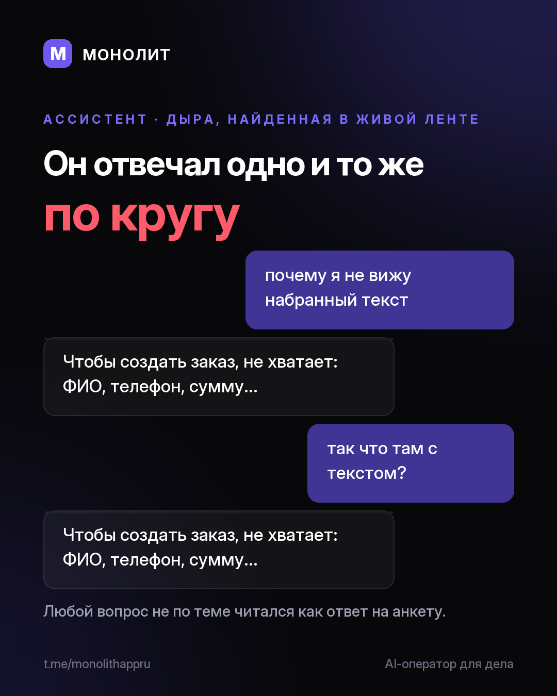

Дневник разработки · 27.07.2026
Ассистент отвечал одно и то же по кругу. Починил (1.4.17 beta)

Нашёл это не в тестах, а в собственной переписке с ассистентом.
Он собирал заказ и спросил, чего не хватает: ФИО, телефон, сумму. Я спросил про другое — почему не вижу набранный текст. В ответ прилетел тот же список. Спросил ещё раз — снова тот же список. Ассистент читал ЛЮБУЮ реплику как ответ на анкету, и выйти из этого было нечем.
Корень оказался рядом: у соседнего вопроса («это новый заказ или дописать в старый?») выход был с самого начала — не понял ответ, снял вопрос, обработал как новое сообщение. У анкеты такого выхода не было вообще.
Теперь: вопрос не про заказ получает нормальный ответ, а собранный черновик не выбрасывается — дошлёте данные, когда будет удобно. Разбор брифа не должен пропадать из-за одного вопроса не в тему.
Что ещё в 1.4.17
• Голос на компьютере: распознавание идёт локально, текст растёт по ходу речи, ничего не уходит на сторону.
• Ответ разработчика приходит плашкой и строкой в «Важном» — раньше он всплывал только бейджем внутри «О приложении», то есть его видел тот, кто случайно туда зашёл.
• Уведомления доходят, даже когда система глушит всплывающие окна.
• У приложения появился характер: кот Лысик ходит по интерфейсу и по тапу зовёт ассистента.
• Профиль открывается за секунду вместо сорока.
Установленные копии обновятся сами.
МОНОЛИТ — учёт заказов, клиентов и денег одной фразой. Windows и Android, бесплатная бета.
Скачать Читать канал